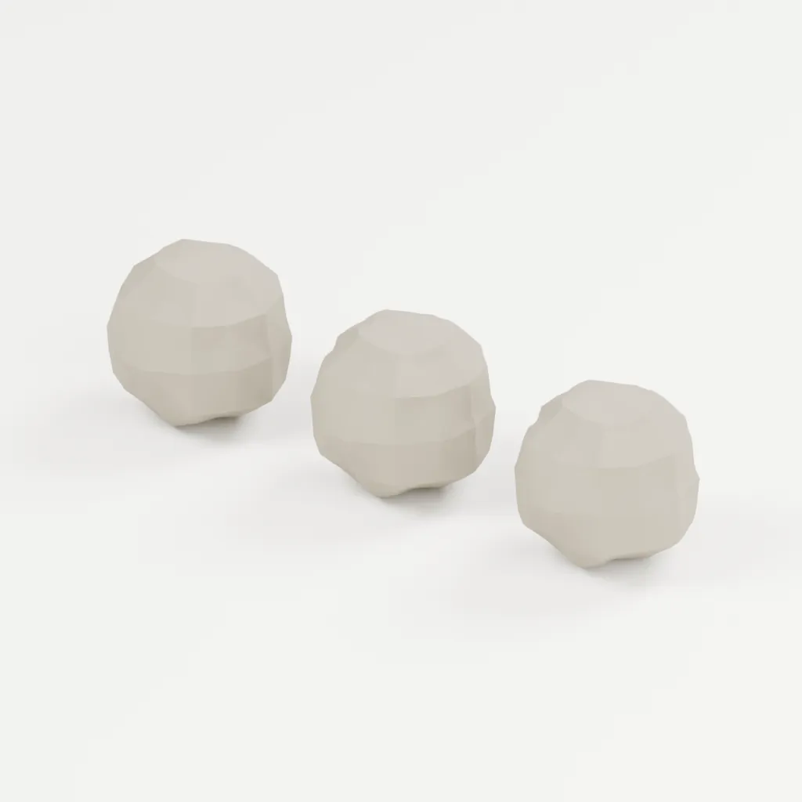
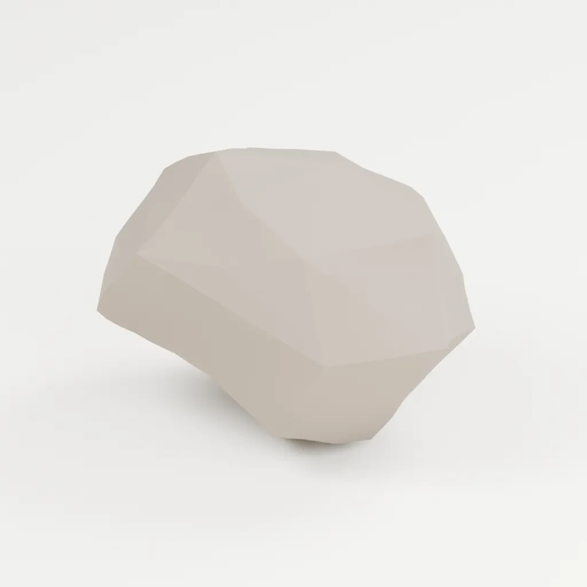

Build the whole object coarsely before detailing one part. Count visible triangles across every copy, then spend geometry where it changes the silhouette at the final image size.

One relief, three mesh spacings
import sand3d as s3d
def same_relief(seed=0):
diameter, gap = 60, 80
stones = []
for index, step in enumerate((14, 7, 3.5)):
with s3d.facets(12):
stone = s3d.sphere("stone", diameter)
s3d.displace(stone, amount=5, size=20, step=step, seed=seed)
s3d.material(stone, "rock", color="#847d6d")
stones.append(s3d.at(stone, x=(index - 1) * gap))
return s3d.assembly("same_relief", stones)
From left to right, displacement uses step 14, 7 and 3.5 mm. Amount, noise size and seed stay the same. The smaller spacing gives the relief more vertices to move: 384, 1,224 and 3,000 triangles respectively, measured with seed 0.
For displacement, a larger step reduces added topology without changing the noise's feature size. It does not decimate fine edges already present in the input mesh. Start with a coarse prototype, then compare the silhouette at the size the final image will actually use.
Budget the whole scene
Copies and instances both multiply visible triangles. Before refining a leaf or stone, multiply its triangle count by the number you plan to show. Build the coarse whole with explicit step and facets, then spend the remaining budget on visible shape.
These are indicative budgets at 1024 px, measured in triangles, not quality scores or library limits.
Subject
Triangle budget
Single piece
About 50,000
Plant, bouquet or small group
About 150,000
Full tree
About 200,000
Scene with ground, water, fire or smoke
About 300,000
Per-face colour needs a mesh coarse enough to stay affordable while retaining the visible pattern. If a fine pattern disappears, broaden the colour rather than refining solely for colour.
Choose the spacing control
Use the table to decide which operation spends the triangles. Each linked reference gives that verb's full parameters. Lengths use the program's unit; field(cell=...) is a length, while facets(n) and rings=n are counts.
Here D is the largest dimension of the part's local bounding box. The automatic angular and displacement rules above apply without a fixed facet count; the next section explains that override. Straight branch axes keep their two endpoints.
Automatic displacement refinement raises an error if it would exceed 500,000 faces. Give a larger step. Existing fine edges are never decimated by displacement. Use lay(..., step=0) unless the carrier's curvature needs extra vertices in the part being seated.
A fixed facets(n) sets segments per revolution both across sections and along turns in sweeps, lofts, wires, bodies and spline paths. A straight span retains its stations. Bend and twist choose their sections from the total angle when no explicit step is given.
Create a path inside its intended facets context. Setting facets only around the later sweep cannot remove stations already stored in the path. Along chooses placements with count; it does not choose mesh rings. A six-sided sweep costs about 12 triangles per path interval, plus its caps. More section facets, more path rings and smaller editing steps all spend triangles.
For surfaces without an axis, a fixed count defines a target edge length L = π D / n, independent of placement.
If thin branches or cavities vanish, increase n. Keep inspecting the shape rather than assuming a lower count is harmless.
Shading is a separate choice
Fixed counts shade flat unless smooth=True was chosen at the program's first facets call, or the part has a smooth override. smooth(ob, angle) persists through edits and copies. Smooth shading does not add geometry to a silhouette.
The default "auto" uses a 0.05 mm chord tolerance with the usual shading. with s3d.facets(n): restores the previous count on exit, even if the block raises an error. See facets for count and shading settings.
A scene to budget
A rock to repeat

Judge the displaced hull by its silhouette before copying this rock across a landscape. The visible triangle total grows with every copy, even when the copies share one mesh.
 sand3d
sand3d GitHub
GitHub